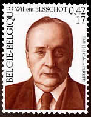

Waar Elsschot zijn mosterd haalde
zaterdag 16 augustus 2003 | Zomaar
Ik heb nooit veel boeken gelezen, maar er wel een handvol verslonden, waaronder alle schrijfsels van Alfons De Ridder, alias Willem Elsschot (1882 – 1960).
Of deze schrijver een gelukkig leven leidde, weet ik niet, al stel ik me grote vragen bij zijn beroepskeuze. “Niet alleen walg ik van de reclame,” zei hij ooit, “maar ook van de commercie in het algemeen.” Het lijkt dan ook quasi absurd te weten dat Willem Elsschot een publiciteitsbureau leidde in Antwerpen. Deze – overigens veelbesproken – dualiteit in zijn doen en denken komt geregeld aan de oppervlakte in zijn werken (Laarmans vs Boormans).
Hij stelde gedenkboeken samen, waarvoor bedrijven en instellingen zelf moesten betalen om beschreven te worden, hij verzorgde de advertentie-exploitatie van andermans uitgaven (o.a. de fameuze Snoeck’s Almanak) en was de anonieme auteur van advertentieteksten. Tussen 1949 en 1959 schreef hij negen gedichten voor de mosterdfabrikant Ferdinand Tierenteyn, die tot op vandaag zijn beroemde blauwe potjes aan de man brengt op het Bisschop Seghersplein in Gent. Hieronder vindt u er eentje van.
De commerciële tegenhanger van Elsschot’s oeuvre blijft – ten onrechte – zonder vermelding in zijn ‘Verzameld Werk’, dat u overigens voor nog geen €25 kan vinden in de boekenwinkel. Dat is nog geen avondje uitgaan. In de plaats krijgt u een staaltje absolute beheersing van de Nederlandse taal, waar geen woord niet op zijn plaats staat en elke zin snijdt. Breng ook eens een bezoekje aan het Willem Elsschotgenootschap.
Lofzang van de Mosterd (1959)
Het is vrij algemeen bekend
tot 1000 uren buiten Gent
dat allerlei grote en kleine heren
proberen mosterd te fabriceren.
Zij doen het met een ernstig gezicht
als deden zij zowaar hun plicht
door zaden te malen en te mengen
in de hoop van mosterd voort te brengen.
Maar tot hun allergrootst verdriet
gelijkt dat goedje op mosterd niet.
Het doet een mens niet niezen maar braken
en kreten van verwensing slaken.
Zo vrienden, neemt een kloek besluit,
smijt dat vergif het venster uit,
eet mosterd van Tierenteyn Ferdinand,
veruit de bekwaamste fabrikant
van ons beminde Belgenland.

Mich op 16 augustus 2003
Inderdaad, Elsschot schreef geen woord te veel, noch te weinig. De man die zijn volk leerde lezen… en kopen ;-)